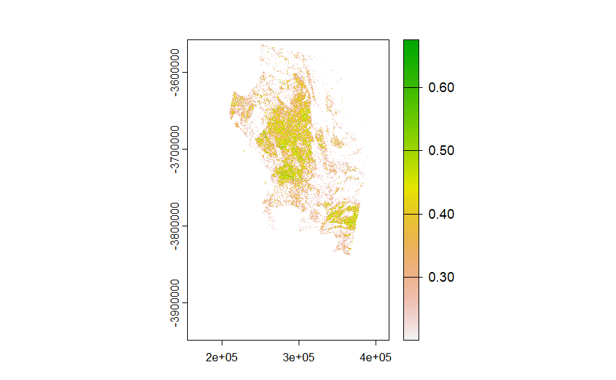

3 Week 3
3.1 Summary
In week three, the methods of correction of remote sensed data are introduced. In the summary part, different correction methods are briefly introduced and the enhancement will be dicussed with the practical results.
3.1.1 Correction
The correction of remote sensing can be divided into three different type, and this part will be mainly focused on the solutions of these corrections.
3.1.1.1 Geometric correction
During geometric correction, ground control points (GCPs) are collected from various sources like GPS, maps, images, and handheld devices. These points are then compared to the image and a reference dataset. Geometric transformation coefficients are calculated based on the matched GCP coordinates, defining the transformation to map coordinates from the original image to the reference dataset. These coefficients are applied to the image to minimize root mean square error (RMSE), typically aiming for an RMSE of approximately 0.5 through graph plotting and parameter adjustments. Finally, the raster image is resampled using interpolation methods such as nearest neighbor to ensure pixel alignment and accuracy across images.
3.1.1.2 Atmospheric correction
The atmospheric correction methods aim to reduce atmospheric influences on photographs in order to recover surface features more accurately. They are broadly divided into relative and absolute correction approaches. Empirical Line Correction, a relative approach, uses ground spectral data and linear regression against satellite pictures to estimate surface reflectance. air Radiative Transfer Models, on the other hand, take an absolute approach, using models such as MODTRAN 4+ and 6S to calculate and rectify air interference while accounting for absorption, scattering effects, and path radiance. Another comparable method, Dark Object Subtraction (DOS), involves identifying the image’s darkest pixel values and subtracting them from all pixels to reduce ambient scattering and optical mixing.
3.1.1.3 Orthorectification correction / topographic correction:
Orthorectification correction is a subset of georectification that involves providing geographic coordinates to an image while removing distortions caused by terrain. Its aim is to ensure each pixel appears as if it were captured from directly overhead. To achieve this, sensor geometry information, elevation models, and orthorectification algorithms are utilized. The resulting orthorectified image accurately corresponds each pixel to a specific location on the Earth’s surface, enabling precise analysis of surface features.
3.1.2 Enhancement
3.1.2.1 Ratio enhancement
The figure below shows the ratio enhancement of vegetation with the aid of NDVI index (above 0.2): 
3.1.2.2 Texture enhancement
 Importance of components: PC1 PC2 PC3 PC4 PC5 PC6 PC7 PC8 PC9 Standard deviation 2.6803 1.0174 0.69710 0.36726 0.29467 0.22414 0.10929 0.08835 0.05838 Proportion of Variance 0.7982 0.1150 0.05399 0.01499 0.00965 0.00558 0.00133 0.00087 0.00038 Cumulative Proportion 0.7982 0.9132 0.96721 0.98220 0.99184 0.99743 0.99875 0.99962 1.00000
Importance of components: PC1 PC2 PC3 PC4 PC5 PC6 PC7 PC8 PC9 Standard deviation 2.6803 1.0174 0.69710 0.36726 0.29467 0.22414 0.10929 0.08835 0.05838 Proportion of Variance 0.7982 0.1150 0.05399 0.01499 0.00965 0.00558 0.00133 0.00087 0.00038 Cumulative Proportion 0.7982 0.9132 0.96721 0.98220 0.99184 0.99743 0.99875 0.99962 1.00000
3.2 Applications
Extending from the lecture, the applications of correction are not mentioned a lot in the content. However, when I was viewing relevant researches, the application of remote sensing correction varies a lot. For example, a study seeks to provide an effective algorithm for reducing atmospheric interference in remote sensing data by combining publicly available atmospheric correction algorithms with machine learning and artificial intelligence approaches. The objective is to reduce uncertainty in water quality monitoring and improve the accuracy of retrieving optically active water quality indicators by addressing the impact of atmospheric particles, especially aerosols, on remote sensing data.(Mir Talas Mahammad Diganta, Md Galal Uddin, and Agnieszka I. Olbert, 2023) As it mentioned in the previous parts, this week we’ve discussed several methods of corrections. However, when we download data sets from websites such as USGS, we tried to select data sets with 0 cloud cover, this procedure might filter out most of the data. In order to prevent this, I’ve discovered a research which done by Zhang and his colleague (Chi Zhang et al., 2023)， they developed a method for removing thin clouds from remote sensing images to improve the quality of ground surface information. The method combines an enhanced approach for locally estimating ambient light with a spectral transformation scheme to generate intermediate images and estimate transmission maps.Experiments conducted on a range of satellite photos demonstrated that the suggested approach is better than the state-of-the-art algorithms, producing images with less clouds and more accurate recovery of ground surface information. Moreover, a research had investigated the method of enhancing land surface temperature (LST) data (Qi Mao, Jian Peng, and Yanglin Wang, 2021), in which Three types of enhancement techniques were thoroughly examined: simultaneous spatiotemporal resolution enhancement, temporal enhancement, and spatial enhancement. The study also covered approaches for evaluating quality and suggested avenues for future investigation, such as combining data-driven and process-driven approaches, developing cross-referencing tools, and improving localization tactics.
3.3 Reflections
3.4 Reference
Mir Talas Mahammad Diganta, Md Galal Uddin, and Agnieszka I. Olbert (2023) ‘Assessing the atmospheric correction algorithms for improving the retrieval data accuracy in the remote sensing technique’.
Chi Zhang et al. (2023) ‘Thin cloud correction method for visible remote sensing images using a spectral transformation scheme’.
Qi Mao, Jian Peng, and Yanglin Wang (2021) ‘Resolution Enhancement of Remotely Sensed Land Surface Temperature: Current Status and Perspectives’.